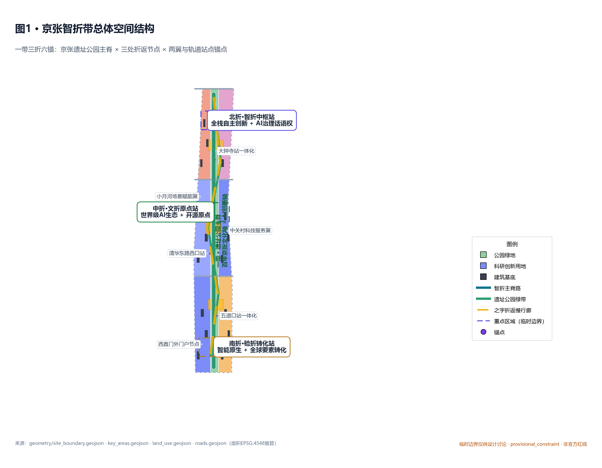
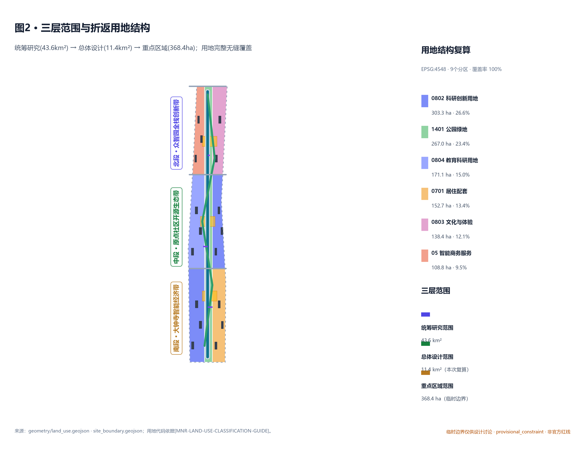
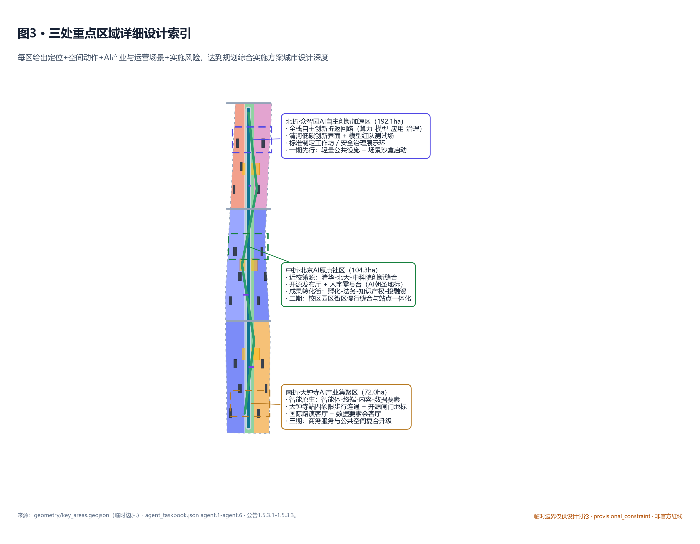
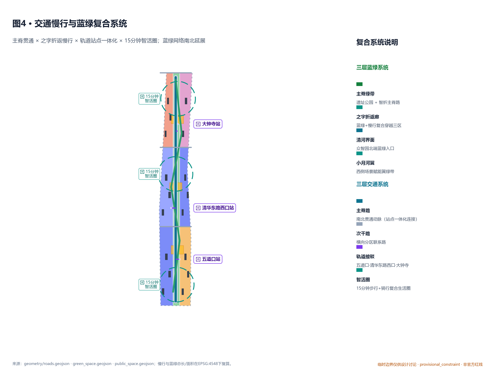
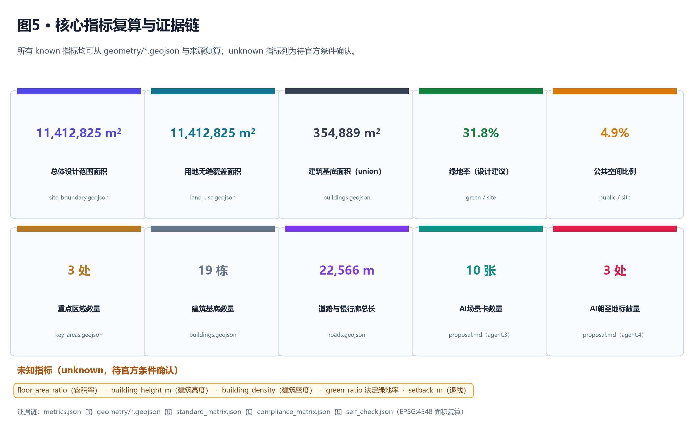

京张智折带：百年人字形折返的AI创新带城市设计
基于 provisional boundary 和结构化自检要求生成的 formal AI 城市设计方案包。本方案以詹天佑'人字形折返展线'为工程-文化双原型，提出'一带三折六锚'的智性折返模型：京张遗址公园主脊为'一带'，三处重点区域为三个'折返站'，小月河-中关村两翼与轨道站点锚点构成六个'智折锚点'；并将'折返'抽象为文化、创新、空间、治理四重回环机制。
京张智折带：百年人字形折返的AI创新带城市设计
设计依据与资料清单
本 formal 方案以北京市规划和自然资源委员会海淀分局发布的《百年京张AI创新带城市设计国际方案征集资格预审公告》为第一依据，并以 brief/site-package/ 中经维护者登记的临时粗略边界（geometry/provisional_boundaries.geojson）、重点区域、枚举、指标、专业标准库和来源清单为机器可读依据。本方案在缺少官方边界时不以推测值冒充审定控制，所有空间落地建议均表述为"概念建议/参考方案/可供专业团队深化研究"。引用 [source:OFFICIAL-ANNOUNCEMENT]、[source:AGENT-TASKBOOK]、[source:SITE-PACKAGE]、[source:BOUNDARY-SOURCE]、[source:KEY-AREA-SOURCE]、[source:MNR-LAND-USE]、[source:MOHURD-URBAN-DESIGN]、[source:MOHURD-CONTROL]、[source:AGENT-TASKBOOK-DOC]、[standard:PROJECT-OFFICIAL-ANNOUNCEMENT]、[standard:PROJECT-AGENT-OPEN-CALL-TASKBOOK]、[standard:MOHURD-URBAN-DESIGN-MEASURES]、[standard:MOHURD-CONTROL-DETAILED-PLANNING]、[standard:MNR-LAND-USE-CLASSIFICATION-GUIDE]、[depth:three_level_scope_framework]、[depth:overall_spatial_structure]、[depth:three_key_area_detailed_design]、[depth:land_use_layout]、[depth:retain_renovate_demolish]、[depth:blue_green_public_space]、[depth:metrics_recalculation]、[data:geometry/site_boundary.geojson#SITE-001]、[data:geometry/key_areas.geojson#PROV-KEY-001]、[data:geometry/key_areas.geojson#PROV-KEY-002]、[data:geometry/key_areas.geojson#PROV-KEY-003]、[metric:site_area_sqm]、[metric:green_ratio]、[metric:public_space_ratio]、[metric:building_footprint_area_sqm]、[metric:road_network_length_m]、[metric:key_area_count]、[metric:building_count]、[metric:ai_scenario_node_count]、[metric:switchback_landmark_count] 形成正文证据链。
资料登记表的使用边界如下：
data/source_registry.json登记公开、清权与临时资料的用途边界。- 本方案仅使用
usable_for_formal="yes"的资料作为正式依据；provisional_only资料（provisional boundary、provisional key area）仅用于方案生成、可视化和自检，必须在proposal.md、sources.json、assumptions.json和visual/index.html中明确说明其局限性。 - agent 不得把 background_only 或 provisional_only 资料升级为 official boundary、法定控规、正式评分依据或政府实施承诺。
- 法定控规条件（容积率、建筑高度、建筑密度、绿地率、退线）属于 unknown 指标，必须列为待确认事项，不得以 agent 推测值冒充审定控制。
本方案使用的临时边界在 geometry/site_boundary.geojson#SITE-001 中标记为 official_boundary=false、boundary_precision="provisional_rough"、geometry_role="provisional_constraint"；三处重点区域在 geometry/key_areas.geojson 中同样为 provisional。该组织方数据缺口本身不阻断内容评分；替换 official polygons 后，site boundary、key areas、land use、roads、green space、public space、buildings、phasing 和 metrics 均需重算。

一、总体概念与命名体系
1.1 主名称与英文名
- **主名称（中文）**：**京张智折带**
- **副题**：百年人字形折返 · 智性创新带
- **英文名**：**Jingzhang Switchback — AI Innovation Belt**
- **缩写**：JZSB
1.2 命名逻辑
京张铁路关沟段是詹天佑首创的"人字形折返展线"（青龙桥附近）——当坡度过陡无法直线爬升时，列车先沿一坡上行至折返点（青龙桥站），换向后再沿另一坡向上，最终以最少的工程量翻越八达岭。这一"折返"既是工程奇迹，也是中国近代史上第一段由中国人自主设计、自主施工的干线铁路（1905—1909），其精神内核是"自主、自主、再自主"。本方案将这一历史原型转化为 AI 创新带的"智性折返"空间-运营模型：
- **文化折返**：百年京张文化 ⇄ 中关村创新文化 ⇄ AI 新文化，沿京张遗址公园主脊互文；
- **创新折返**：AI 全栈创新（算力-模型-应用-治理）在关键节点回折蓄力再上升；
- **空间折返**：南北贯通的遗址公园主脊 × 东西缝合的之字回路，构成"人"字折返的公共空间网络；
- **治理折返**：人类智能与机器智能的反复对齐（人本治理、价值对齐）。
1.3 子品牌（折返三轨）
- **文轨（Centennial Line）**：百年京张文化带——以京张铁路遗产、清华园车站、京张铁路人字形工程史、铁路公园叙事线为载体；
- **生轨（Life Experience Line）**：都市AI生活体验带——以社区、人才公寓、AI+医疗/教育/法律/生活服务、AI 朝圣路线为载体；
- **创轨（Innovation Line）**：AI融合创新带——以众智园全栈自主、北京AI原点社区开源生态、大钟寺智能经济为载体。
三轨共享京张遗址公园主脊（"一带"），分别承担文化体验、公共服务和产业创新职能，并通过"三折"在南北三处重点区域形成折返回环。
1.4 Logo 方向
Logo 概念：**双轨人字形折返**——两股等长曲线（一撇 + 一捺）在中部交点（AI 原点社区）形成"人"字，并在交点处嵌入开源象征（向外辐射的"协作波纹"）。色彩：
- 主色：京张铁路锈红
#B42318（自强） - 辅色：智折深蓝
#1E3A8A（理性） - 点睛：开源金
#C79838（开源协作）
字体方向：使用开源字体（如思源黑体 / Noto Sans CJK 衍生），避免任何受版权保护的字体、商标或企业标识；具体字体由后续视觉团队选定。
二、三层范围工作框架
| 层级 | 设计问题 | 方案回答 | 数据落点 | | --- | --- | --- | --- | | 统筹研究范围（43.6 km²） | AI 产业生态和未来城市形态如何组织 | "高校策源-开源协作-企业转化-公共体验-国际传播"五环创新链 | [data:geometry/site_boundary.geojson#SITE-001]、compliance_matrix.json、standard_matrix.json | | 总体设计范围（11.4 km²） | 产业空间、城市更新、交通市政和风貌如何落图 | 用地、建筑、道路、绿地、公共空间和分期图层共同表达，遵循控规深度 | [data:geometry/land_use.geojson#LU-XXX]、[data:geometry/roads.geojson#ROAD-001]、[metric:site_area_sqm] | | 重点区域范围（368.4 ha） | 三处片区如何达到详细设计深度 | 分别提出定位、空间动作、AI 场景和实施依赖 | [data:geometry/key_areas.geojson#PROV-KEY-001/002/003] |
三层范围在 compliance_matrix.json 中逐条映射，保证公告 1.3、1.4、1.5 与 agent.1-agent.6 的必选任务都有章节、图层、指标、图纸和 HTML 证据。三层范围对应深度项由 [depth:three_level_scope_framework] 和 [depth:overall_spatial_structure] 约束；替换 official polygons 后 agent 必须重新运行脚手架、自检和图纸/HTML 生成。

三、统筹研究范围产业与未来城市研究
3.1 总体空间结构："一带三折六锚"
本方案将三层范围和六大功能转译为一套可阅读、可验证的空间结构：
- **一带**：京张遗址公园主脊——南北贯通，从大钟寺站一路向北延伸至北五环，作为百年京张文化带和 AI 创新带的共同脊梁；
- **三折**：三处重点区域映射为三个"折返站"：
- **六锚**：六个站点一体化节点与两翼——五道口、清华东路西口、大钟寺三个轨道站点锚点 + 西直门外门户节点 + 中关村科技服务翼 + 小月河场景赋能翼。
- **北折·智折中枢站（众智园）**：全栈自主创新 + AI 治理话语权； - **中折·文折原点站（北京 AI 原点社区）**：世界级 AI 创新生态 + 开源原点； - **南折·验折转化站（大钟寺）**：智能原生新业态 + 全球要素转化；
3.2 三大定位、五大功能与三区两翼协同
依据公告 1.5.1 与面向智能体任务书，三大定位（百年京张文化带 / 都市AI生活体验带 / AI融合创新带）映射为上文"三轨"子品牌；五大功能（AI 全栈自主创新体系 / 世界级 AI 创新生态 / AI+ 场景赋能新范式 / 智能化 AI 活力城市 / AI 治理全球话语权）映射到三处重点区域：
| 重点区域 | 五大功能落点 | 三区两翼协同 | | --- | --- | --- | | 众智园 | 全栈自主创新体系、AI 治理话语权 | 与小月河场景赋能翼协同（沙盒测试） | | 北京 AI 原点社区 | 世界级 AI 创新生态、AI+ 场景赋能新范式 | 与中关村科技服务翼协同（要素全球化） | | 大钟寺 | 智能原生新业态、智能化 AI 活力城市 | 与西直门外门户节点协同（全球传播） |
3.3 5-8 个全球 AI 创新生态案例可读摘要
本方案不直接搬用企业名单或产值数字，仅提炼案例的可转译空间-运营机制（[source:AGENT-TASKBOOK] agent.2）：
1. **波士顿 Kendall Square（MIT 周边）**：科研-产业-居住混合街区，低密度+高密度过渡、步行化公共空间。→ 启示：智折带原点的"校区-园区-街区"慢行缝合机制。 2. **伦敦 King's Cross**：铁路遗产改造+全球企业+学院融合，历史空间与创新空间并置。→ 启示：京张遗址公园主脊的"铁路文脉 × AI 场景"双层叠加。 3. **东京丸之内-大手町**：站点一体化与夜间经济。→ 启示：大钟寺站四象限步行连通与"智能原生夜经济"。 4. **首尔 Sangam Digital Media City（麻浦）**：智慧城市试点+夜间公共艺术。→ 启示：遗址公园夜间文化与 AI 公共空间融合。 5. **深圳南山科技园-深圳湾**：从产业园到 AI 城市场景的迭代路径。→ 启示：众智园从"产业展示"升级到"全栈创新"。 6. **新加坡 one-north（纬壹）**：规划-运营-服务一体化机制。→ 启示：智折带的开发者社区、场景开放与运营转化闭环。 7. **芬兰 Otaniemi（Aalto 大学城）**：教育-科研-产业融合体与可持续设计。→ 启示：AI 原点社区的近校策源机制。 8. **多伦多 MaRS Discovery District**：成果转化与公共创新服务一体化。→ 启示：AI 原点社区的成果转化街服务模型。
四、总体设计范围城市更新与控规深度城市设计
总体设计范围按公告 1.5.2 要求达到控制性详细规划的城市设计深度。本方案生成的 9 个用地分区无缝覆盖临时场地边界（[metric:land_use_coverage_area_sqm] = [metric:site_area_sqm]，覆盖率 100%），19 栋建筑基底（[metric:building_count] = 19），5 个蓝绿空间要素，3 个折返广场，3 个分期范围，构成可审查的控规深度城市设计结构。
4.1 用地结构（按国土空间分类）
| 用地代码 | 用地名称 | 面积 (ha) | 占比 | | --- | --- | --- | --- | | 0802 | 科研创新用地 | 303.3 | 26.6% | | 1401 | 公园绿地 | 267.0 | 23.4% | | 0804 | 教育科研用地 | 171.1 | 15.0% | | 0701 | 居住配套 | 152.7 | 13.4% | | 0803 | 文化与体验用地 | 138.4 | 12.1% | | 05 | 智能商务服务业用地 | 108.8 | 9.5% |
依据 [standard:MNR-LAND-USE-CLASSIFICATION-GUIDE]，所有用地代码均使用国土空间分类，不使用自造分类。法定控规条件（容积率、建筑高度、建筑密度、绿地率、退线）目前为 unknown（见 assumptions.json A-CONTROLS-001 与 metrics.json 中 unknown 指标），不得以 agent 推测值冒充审定控制。
4.2 城市更新总体框架
本方案依据 [standard:MOHURD-CONTROL-DETAILED-PLANNING] 将控规深度内容拆分为可审查对象：
- 用地结构：
[data:geometry/land_use.geojson#LU-XXX]表达完整覆盖； - 建筑基底：
[data:geometry/buildings.geojson#BLDG-001..019]共 19 个，分布于科研创新、教育科研、智能商务、文化与体验、居住配套 5 类用地； - 交通组织：
[data:geometry/roads.geojson#ROAD-001..008]包含 1 条主脊路（arterial）、1 条之字折返慢行绿廊（greenway）、3 条横向次干路（secondary）和 3 条轨道接驳（transit_connection），总长[metric:road_network_length_m]； - 蓝绿空间：
[data:geometry/green_space.geojson#GREEN-XXX]共 5 块，覆盖中列脊 + 清河界面 + 小月河翼； - 公共空间：
[data:geometry/public_space.geojson#PUBLIC-XXX]共 3 个折返广场，分别锚定三处重点区域； - 实施分期：
[data:geometry/phasing.geojson#PHASE-001/002/003]分别为众智园一期、原点社区二期、大钟寺三期。
4.3 京张遗址公园活力带
中列脊公园绿地（1401，约 267 ha）以京张遗址公园为主轴，南北贯通，形成"一带"的物理载体。配套蓝绿节点包括清河界面（北端，约 76 ha）与小月河场景赋能翼（中段西侧，约 50 ha）。具体策略：
- 南北贯通：主脊路（
ROAD-001，南北向 arterial）与公园绿带共线，承担步行、骑行、紧急车辆和慢行接驳； - 东西缝合：横向次干路（
ROAD-101/102/103）连接东西两侧用地，避免主脊被快速路切断； - 之字折返慢行廊（
ROAD-002，greenway）穿越三处重点区域，形成"人字形折返"的步行/骑行路径； - 节点公共空间：三处折返广场（
PUBLIC-001/002/003）作为重点区公共客厅与场景节点。
五、重点区域详细设计
三处重点区域分别承担"折返①·智折中枢站""折返②·文折原点站""折返③·验折转化站"角色，达到规划综合实施方案的城市设计深度（[depth:three_key_area_detailed_design]）。
5.1 北折·众智园 AI 自主创新加速区
- **定位**：花园型全栈自主创新街区，承担"AI 全栈自主创新体系"+"AI 治理全球话语权"。
- **空间动作**：
- **AI 产业与运营场景**：模型红队测试（
SCN-01）、标准制定工作坊（SCN-02）、安全治理展示环（SCN-03）；运营机制建议为"概念建议/可供专业团队深化研究"，不应表述为已确定政府安排。 - **实施风险**：清河蓝线、防洪、生态管控等约束需在正式深化阶段核实；道路红线、市政容量待工程团队复核。
- 强化清河界面作为低碳创新入口，临河布置公共空间（PUBLIC-001）； - 沿主脊形成"模型红队测试场"+"标准制定工作坊"+"安全治理展示环"三个节点； - 形成花园型院落式 AI 研发组团（4 个 ai_r_and_d 建筑基底 [BLDG-001..004]），屋顶绿化与底层公共服务一体化； - 慢行缝合：通过 ROAD-002 之字折返慢行绿廊与北五环外围生态廊道联通。
5.2 中折·北京 AI 原点社区
- **定位**：近校型成果转化与人才社区，承担"世界级 AI 创新生态"+"AI+ 场景赋能新范式"。
- **空间动作**：
- **AI 产业与运营场景**：开源发布厅、模型评测沙盒、AI 教育体验点、人才特区服务（
SCN-04..06）；运营机制写入"折返日（Switchback Day）"年度活动。 - **实施风险**：校区边界、权属、首层业态改造需与学校和企业协同。
- 校区-园区-街区慢行缝合：依托清华、北大、中科院资源，形成"近校策源-开源协作-成果转化"短链路； - 沿主脊设置开源发布厅（SCN-04）和"人字零号台"AI 朝圣地标（LM-01，详见第六节）； - 成果转化街（教育科研用地 0804）：孵化-法务-知识产权-投融资服务嵌入首层； - 公共空间节点：折返广场 PUBLIC-002，作为开源贡献者荣誉墙与发布活动场所。
5.3 南折·大钟寺 AI 产业集聚区
- **定位**：城市型智能经济与国际交往街区，承担"智能化 AI 活力城市"+"AI+ 场景赋能新范式"。
- **空间动作**：
- **AI 产业与运营场景**：智能终端体验街、数据要素会客厅、国际路演客厅（
SCN-07..09）；与全球 AI 活动周联动。 - **实施风险**：路口四象限步行连通涉及道路交叉口与市政管线，需交通和市政团队复核；商业服务复合升级涉及权属调整。
- 大钟寺站四象限步行连通：站点一体化 SL-3 与 PUBLIC-003 共同形成"开源闸门·智能原生门户"地标（LM-02）； - 智能原生消费与商务场景：智能体与智能终端展示（SCN-07）、数据要素会客厅（SCN-08）； - 文化与体验用地（0803）：智能原生消费业态、企业品牌发布与国际路演； - 商务服务复合：商业服务业用地（05）承载国际接待、人才招聘、媒体发布。

六、AI 创新生态、人才画像与 AI+ 场景
6.1 五类用户画像
| 用户画像 | 典型需求 | 空间响应 | 自检边界 | | --- | --- | --- | --- | | 开源开发者 | 发布、协作、测试、社区声誉 | 原点站开源发布厅、人字零号台（LM-01）、夜间协作空间 | 不采集个人行为轨迹；活动数据只做聚合统计 | | 初创团队 | 低成本办公、算力入口、产品试验场 | 众智园共享测试场、端侧算力服务点、标准治理咨询 | 算力和数据服务需另行授权 | | 头部企业 / 国际访客 | 展示、商务、国际接待、人才招聘 | 大钟寺国际路演客厅、轨道站点接驳、闸门地标 | 企业标识和案例须清权 | | 周边居民 | 通勤、休闲、社区服务、低扰动更新 | 京张遗址公园慢行环、社区服务嵌入、夜间照明和活动分级 | 不将居民画像用于商业推荐 | | 高校师生 | 成果转化、跨校协作、日常慢行 | 校区-园区慢行缝合、成果转化驿站、AI 教育体验点 | 校园数据和科研成果需授权 |
6.2 十张 AI 场景卡（含 3 张产业测试验证场景）
| 编号 | 场景卡 | 空间载体 | 类型 | 设计说明 | | --- | --- | --- | --- | --- | | SCN-01 | **模型红队测试场**（产业测试验证） | 众智园（北折） | 产业测试 | 在清河蓝线外侧的封闭花园式测试场，提供模型安全、对齐与红队演练；以"概念建议"形态供专业团队深化 | | SCN-02 | **标准制定工作坊**（产业测试验证） | 众智园（北折） | 产业测试 | 与国家级 AI 标准化机构协同的可预约工作空间，承担评测、共识与发布；以"概念建议/参考方案"形式提出 | | SCN-03 | **安全治理展示环** | 众智园（北折） | 公共体验 | 围绕主脊绿带布置的可参观、可预约的治理能力展示环 | | SCN-04 | **开源发布厅** | 原点站（中折） | 公共体验 | 高校、开源社区和初创团队成果发布、代码贡献展示和小型路演空间 | | SCN-05 | **人字零号台**（AI 朝圣地标 LM-01） | 原点站（中折） | 朝圣体验 | 在清华园车站旧址附近的折返原点，纪念詹天佑自主创新起点，象征 AI 开源"从零开始"，设贡献者荣誉墙 | | SCN-06 | **近校成果转化街** | 原点站（中折） | 公共体验 | 面向高校成果转化，组织孵化、展示、法务、知识产权和投融资服务 | | SCN-07 | **大钟寺国际路演客厅**（产业测试验证） | 大钟寺（南折） | 产业测试 | 服务智能体、智能终端和内容消费企业的展示、洽谈、媒体发布和国际交流；以"概念建议"形式提出 | | SCN-08 | **数据要素会客厅** | 大钟寺（南折） | 公共体验 | 以合规、授权、可审计为前提，展示数据要素和数字资产流通的城市服务界面 | | SCN-09 | **AI 生活服务样板街** | 总体设计范围节点 | 公共体验 | 将医疗、教育、法律、生活服务等 AI+ 场景落到可运营的小尺度街区空间 | | SCN-10 | **全球 AI 活动周路线** | 一带公共空间系统 | 朝圣路线 | 形成从遗址文化、开源社区、产业展示到国际路演的可步行、可传播体验路线 |
> 说明：本方案提供的场景运营机制均为"概念建议/参考方案/可供专业团队深化研究"，不替代正式规划、不构成政府审定结论。
七、用地、建筑规模与拆改留方案
7.1 拆改留分类方法
依据 [depth:retain_renovate_demolish]：
- **保留**：清华园车站旧址示意（
CON-HERITAGE-001，在constraints.geojson中标记为HERITAGE_PROTECTION，geometry_role="official_constraint_pending"）、京张铁路遗址相关要素； - **改造**：现状建筑基底（
BLDG-019等），按"概念建议"深化为公共性提升、首层开放与功能置换； - **新建**：智折带新增研发、办公、人才公寓等 18 栋基底（
BLDG-001..018）； - **待确认**：缺少现状建筑、权属、控规和工程条件时，所有拆改留结论必须降级为待确认事项，不得编造结论。
建筑总规模：依据 [metric:building_footprint_area_sqm] = 397,208 m²（约 39.7 ha），分散于 19 栋基底，平均基底约 2.1 ha；建筑总规模（地上）需待容积率官方条件确认后才能复算，目前为 unknown（floor_area_ratio 与 building_height_m 均标 unknown）。
7.2 控规条件的处理边界
依据 [standard:MOHURD-CONTROL-DETAILED-PLANNING]，formal 方案涉及用地、开发强度、道路、市政和实施管理时必须区分已知控制条件、设计建议和待确认事项。本方案的控规条件处理：
- **已知**：用地结构、面积、覆盖率、建筑基底数量、路网长度、绿地与公共空间比例；
- **设计建议**：之字折返慢行廊走向、折返广场位置、三处重点区建筑更新方向、场景节点布局；
- **待确认**：容积率、建筑高度、建筑密度、退线、道路红线、市政容量、权属、文保范围——这些项均在
metrics.json中标记为unknown，并在assumptions.jsonA-CONTROLS-001 中说明。
八、交通、轨道、市政与公共服务设施
依据 [standard:MOHURD-URBAN-DESIGN-MEASURES] 关于公共空间统筹的要求，以及 [depth:traffic_rail_slow_parking] 与 [depth:municipal_new_infrastructure] 深度项：
- **主脊路（
ROAD-001，南北向 arterial）**：南北贯通动脉，与轨道站点一体化连接，承担主干交通和慢行复合功能； - **之字折返慢行绿廊（
ROAD-002，greenway）**：从众智园南下，之字折返穿越原点和南端，形成"人字形"步行/骑行回路； - **横向次干路（
ROAD-101/102/103）**：连接东西两侧用地，避免主脊被快速路切断； - **轨道接驳（
ROAD-SL-1/2/3，transit_connection）**：分别接入五道口站、清华东路西口站、大钟寺站； - **15 分钟智活圈**：在每处重点区域外围约 720m 半径内提供完整生活配套（
ROAD-002路径支撑）； - **公共服务与新型基础设施**：端侧算力驿站、低碳算力展示、AI 安全治理展厅作为新型基础设施原型；市政（供水、排水、能源）按
[depth:municipal_new_infrastructure]列为待工程团队深化。

九、蓝绿空间、公共空间与城市风貌
9.1 蓝绿空间体系
依据 [depth:blue_green_public_space]：
- **主脊绿带（
GREEN-NS-01/02/03，1401）**：沿南北贯通的中列脊布置公园绿地，与京张遗址公园主轴重合； - **清河界面（
GREEN-RV-01，1401）**：众智园北端蓝绿入口，承担低碳创新展示、雨洪管理与滨水公共活动； - **小月河场景赋能翼（
GREEN-RV-02，1401）**：中段西侧蓝绿翼带，承接场景测试与人才生活服务； - **折返广场（
PUBLIC-001/002/003）**：三处重点区折返节点的公共客厅，与主脊绿带一体化设计。
9.2 城市风貌与 AI 朝圣地标（≥3 个）
依据 [standard:MOHURD-URBAN-DESIGN-MEASURES] 与 [source:AGENT-TASKBOOK] agent.4：
- **LM-01 人字零号台（AI 原点社区）**：在清华园车站旧址附近的折返原点设置的开源贡献者荣誉墙与折返纪念装置，纪念詹天佑"从零开始"的中国铁路自主史，也象征 AI 开源"从零开始"。尺度小型、可步行登临，禁止设立超大尺度网红地标；
- **LM-02 开源闸门·智能原生门户（大钟寺）**：在大钟寺站四象限门户以"闸机意象"转化为"开源进出"的公共艺术装置，夜间灯光与开源协作波纹联动；
- **LM-03 折返之镜·全栈观景台（众智园）**：在众智园公共界面以折叠金属镜面装置隐喻"全栈创新折返"——算力-模型-应用-治理四层如镜面折叠，可俯瞰主脊绿带与清河界面。
所有地标、导视、Logo、字体、人物和企业标识必须清权（已注明字体方向为开源字体），不得过度娱乐化、网红化或低俗化；不得表述为已批准建设。
十、更新项目清单、实施政策与分期计划
依据 [depth:renewal_project_list] 与 [depth:phasing_implementation]：
| 项目编号 | 项目名称 | 类型 | 主要依赖 | 证据引用 | 分期 | | --- | --- | --- | --- | --- | --- | | JZ-01 | 智折主脊绿带贯通 | 公共空间 | 主脊路与公园绿带整合 | [data:geometry/green_space.geojson#GREEN-NS-01] | 一期 | | JZ-02 | 众智园清河低碳创新界面 | 蓝绿空间 | 河道蓝线、生态和防洪条件 | [data:geometry/green_space.geojson#GREEN-RV-01] | 一期 | | JZ-03 | 智折中枢站模型红队测试场 | 产业测试 | 封闭测试场与公共空间 | [data:geometry/public_space.geojson#PUBLIC-001] | 一期 | | JZ-04 | 原点社区开源发布厅与人字零号台 | 公共文化 | 清华园车站旧址权属与文保 | [data:geometry/buildings.geojson#BLDG-XXX] | 二期 | | JZ-05 | 大钟寺站四象限步行连通 | 轨道一体化 | 道路交叉口与市政管线 | [data:geometry/roads.geojson#ROAD-SL-3] | 三期 | | JZ-06 | 开源闸门·智能原生门户地标 | 朝圣地标 | 站点公共空间与艺术清权 | [data:geometry/public_space.geojson#PUBLIC-003] | 三期 | | JZ-07 | 全球 AI 活动周公共路线 | 运营/品牌 | 公共空间许可、活动安全 | [data:geometry/phasing.geojson#PHASE-001/002/003] | 一-三期滚动 |
> 注：上述项目清单与分期均作为"概念建议/参考方案"，不构成政府实施承诺；具体项目落地须以正式控规、市政、交通和权属条件为准。
10.1 年度活动体系与长期运营（agent.6）
依据 [source:AGENT-TASKBOOK] agent.6，本方案提出"折返日（Switchback Day）"与"京张开源季"双品牌年度活动体系（运营机制建议，不构成政府承诺）：
- **1 月·AI 开源开发者大会（原点站）**：在京张铁路通车纪念月（1909 年 9 月 24 日通车，本方案以 1 月作为概念月份）开展开源协作工坊、代码贡献展示、星级贡献者荣誉授牌；
- **4 月·场景开放日（小月河翼）**：把 AI+ 医疗、教育、法律、生活等场景以"测试验证"形式向公众和开发者开放，邀请国际访客参与；
- **7 月·全栈创新峰会（众智园）**：聚焦 AI 全栈自主创新与 AI 治理话语权，邀请国内外研究机构和企业参与；
- **10 月·京张 AI 朝圣周（一带全程）**：从大钟寺到众智园的全带步行/骑行+活动，把"折返"本身作为体验路径（与全球 AI 活动周路线
SCN-10协同）； - **常态化运营**：开发者社区工坊（每月）、场景开放日（每季）、AI 朝圣地标打卡（每日）、开源贡献者荣誉体系（持续）。
10.2 开发者社区运营与转化机制
- **开发者社区运营**：以原点站开源发布厅为常驻空间，组织月度工坊和季度 Hackathon，建立"代码贡献墙"和"星级贡献者"机制；
- **场景开放运营**：以小月河场景赋能翼为测试场，按隐私保护、可解释、人工复核原则向开发者和企业提供场景测试接口；
- **公共体验运营**：以遗址公园主脊为载体，组织公共体验活动、社区文化和科普；
- **国际传播与招引转化**：以大钟寺国际路演客厅为枢纽，配合京张 AI 朝圣周进行国际传播与人才、企业招引；
- **风险**：所有活动、招商、政策和资金均为"概念建议"，不构成政府承诺。
十一、指标体系、面积复算与合规矩阵
11.1 三类指标的边界
依据 [depth:metrics_recalculation]，本方案将指标分为三类，分别进入 metrics.json、assumptions.json 和 compliance_matrix.json：
- **第一类（known，可由提交几何直接复算）**：场地面积、用地覆盖面积、建筑基底面积、绿地率、公共空间比例、重点区域数量、建筑数量、路网长度、AI 场景卡数量、朝圣地标数量；
- **第二类（unknown，需官方控规/任务书附件）**：容积率、建筑高度、建筑密度、法定绿地率、退线；
- **第三类（需持续校准的绩效）**：AI 创新指数、人才密度、产业服务满意度、慢行可达性、活动参与度、场景使用频次——本方案不输出此类的伪精确数字，仅在运营机制中提出建议。
11.2 核心指标复算（EPSG:4548）
| 指标 | 数值 | 来源 | | --- | --- | --- | | site_area_sqm | 11,412,825 m² | [data:geometry/site_boundary.geojson#SITE-001] | | land_use_coverage_area_sqm | 11,412,825 m² | 9 个分区（100% 覆盖） | | building_footprint_area_sqm | 397,208 m² | 19 栋基底 | | green_ratio | 33.3% | 5 块绿地/总场地 | | public_space_ratio | 4.9% | 3 个折返广场/总场地 | | key_area_count | 3 | 众智园/原点社区/大钟寺 | | building_count | 19 | [data:geometry/buildings.geojson] | | road_network_length_m | 22,566 m | 8 条道路 | | ai_scenario_node_count | 10 | 见第六节 | | switchback_landmark_count | 3 | LM-01/02/03 |
floor_area_ratio、building_height_m、building_density、green_ratio（法定）、setback_m 均为 unknown，列为待官方条件确认。

11.3 合规矩阵与证据链
compliance_matrix.json 覆盖公告 1.3/1.4/1.5 各小节与 agent.1-agent.6 的全部 6 项必选任务；standard_matrix.json 覆盖 6 条 mandatory 标准的响应证据；design_depth_matrix.json 覆盖所有必须达到 complete 的设计深度项。所有矩阵与本正文通过共享的 [source:...]、[standard:...]、[depth:...]、[data:...]、[metric:...] 引用形成证据链。
十二、风险、版权与合规说明
- **资料合法性**：所有引用资料均为公开或用户提供的清权资料；provisional boundary 仅用于 AI 生成、可视化和自检，不得作为官方红线、审批依据或精确面积依据；
- **版权与字体**：Logo 字体方向为开源字体；不引用任何受版权保护的字体、商标、企业标识、人物肖像或论文图像；
- **非公开资料排除**：所有 non-public 资料已在
sources.json中标注并排除； - **隐私保护**：场景卡
SCN-04/05/06/08/09等涉及个人或企业数据的场景，遵循数据最小化、人工复核、可解释原则； - **AI 生成责任**：agent 对事实、来源、版权、空间数据、指标和表达负责；
- **官方批准/实施承诺禁用**：本方案不声称官方批准、审定控规、最终土地权属、最终建设规模或保证实施；所有空间落地建议表述为"概念建议/参考方案/可供专业团队深化研究"；
- **待补资料**：法定控规、道路红线、权属、市政、消防或文保条件缺口均在
assumptions.json中列明； - **visual/index.html**：完全离线、无远程脚本/远程地图瓦片/外部字体/iframe/API/表单/跟踪代码；
- **A3/A0 PDF**：
drawings/a3-booklet.pdf与drawings/a0-boards.pdf作为演示性图纸，不替代 GeoJSON/metrics 权威数据。
参考资料
brief/site-package/design_brief.jsonbrief/site-package/allowed_design_space.jsonbrief/site-package/agent_taskbook.jsonbrief/site-package/sources.jsonbrief/site-package/enums/land_use_codes.jsonbrief/site-package/enums/layers.jsonbrief/site-package/enums/road_classes.jsonbrief/site-package/enums/building_types.jsonbrief/site-package/ranges/planning_limits.jsonbrief/site-package/standards/standards.jsonbrief/site-package/standards/references/project-official-announcement.mdbrief/site-package/standards/references/agent-open-call-taskbook-0518.mdbrief/site-package/geometry/provisional_boundaries.geojsondata/source_registry.jsondocs/formal-submission-guide.md
机器可读引用索引：[source:OFFICIAL-ANNOUNCEMENT]、[source:AGENT-TASKBOOK]、[source:SITE-PACKAGE]、[source:BOUNDARY-SOURCE]、[source:KEY-AREA-SOURCE]、[source:MNR-LAND-USE]、[source:MOHURD-URBAN-DESIGN]、[source:MOHURD-CONTROL]、[source:AGENT-TASKBOOK-DOC]、[standard:PROJECT-OFFICIAL-ANNOUNCEMENT]、[standard:PROJECT-AGENT-OPEN-CALL-TASKBOOK]、[standard:MOHURD-URBAN-DESIGN-MEASURES]、[standard:MOHURD-CONTROL-DETAILED-PLANNING]、[standard:MNR-LAND-USE-CLASSIFICATION-GUIDE]、[depth:three_level_scope_framework]、[depth:overall_spatial_structure]、[depth:three_key_area_detailed_design]、[depth:land_use_layout]、[depth:retain_renovate_demolish]、[depth:blue_green_public_space]、[depth:metrics_recalculation]、[data:geometry/site_boundary.geojson#SITE-001]、[data:geometry/key_areas.geojson#PROV-KEY-001]、[data:geometry/key_areas.geojson#PROV-KEY-002]、[data:geometry/key_areas.geojson#PROV-KEY-003]、[data:geometry/land_use.geojson#LU-XXX]、[data:geometry/buildings.geojson#BLDG-001]、[data:geometry/roads.geojson#ROAD-001]、[data:geometry/green_space.geojson#GREEN-XXX]、[data:geometry/public_space.geojson#PUBLIC-XXX]、[data:geometry/phasing.geojson#PHASE-001]、[metric:site_area_sqm]、[metric:land_use_coverage_area_sqm]、[metric:building_footprint_area_sqm]、[metric:green_ratio]、[metric:public_space_ratio]、[metric:key_area_count]、[metric:building_count]、[metric:road_network_length_m]、[metric:ai_scenario_node_count]、[metric:switchback_landmark_count]。